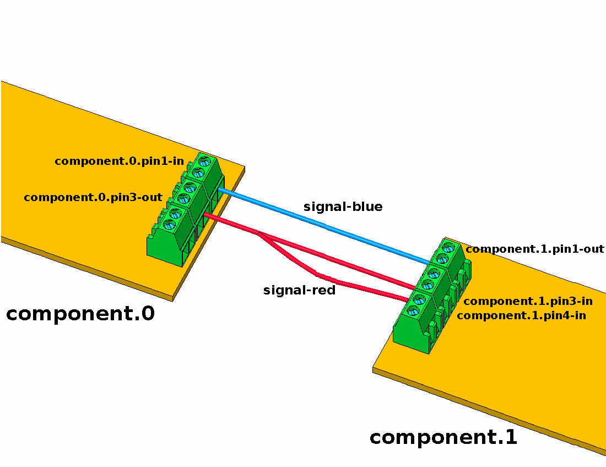
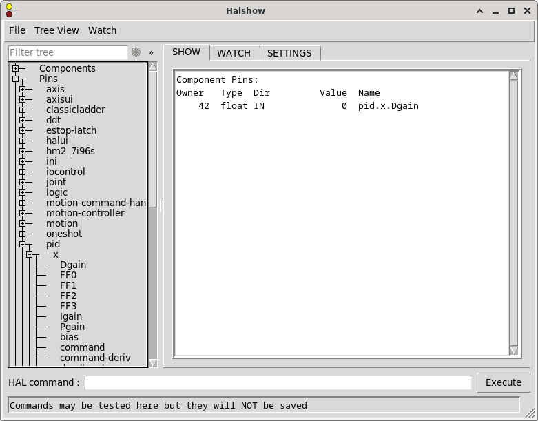
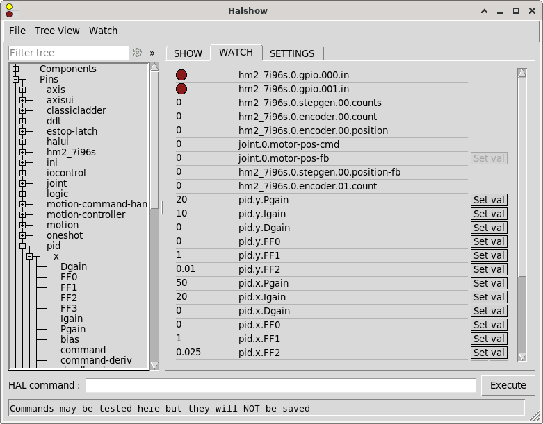
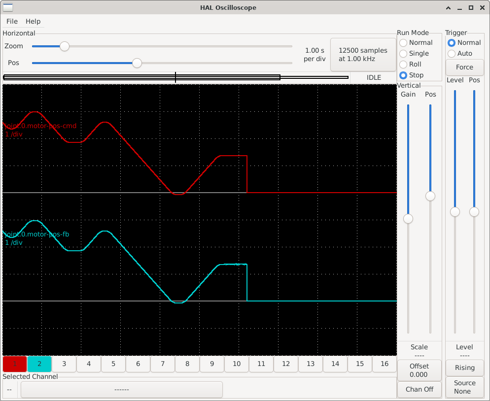
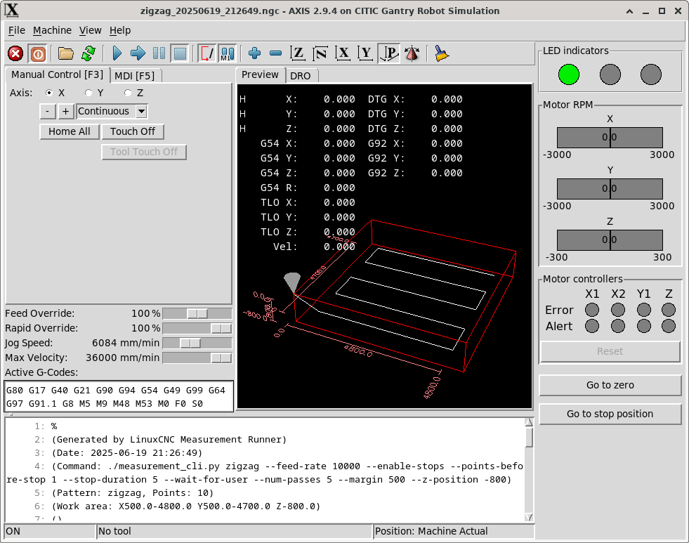
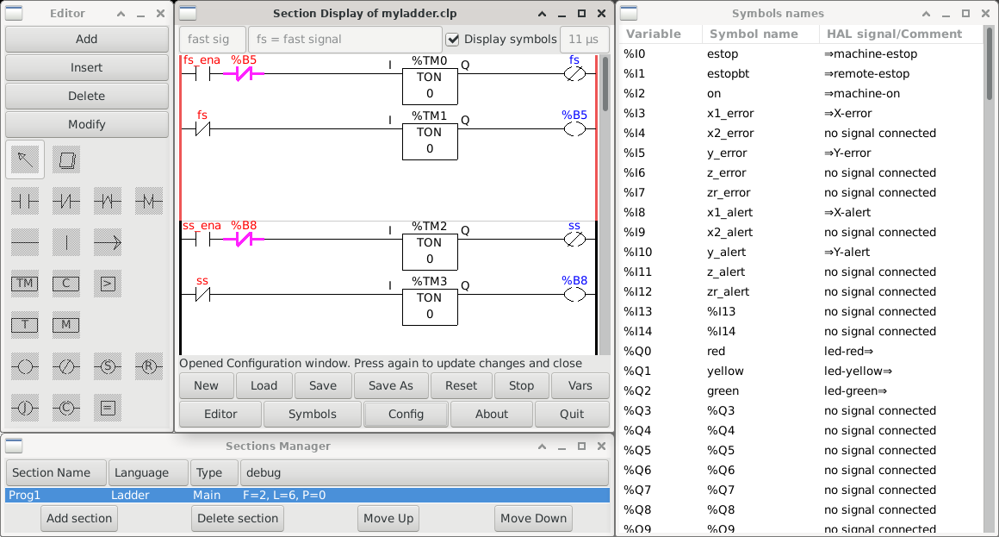

3.8. LinuxCNC Configuration¶
As noted in Section 3.6.2, a LinuxCNC configuration comprises several files, requiring at least one INI file and one HAL file. The following sections detail the configuration of both file types, using the citic_gantry_robot configuration as an example.
3.8.1. INI Configuration¶
3.8.1.1. .ini Configuration File Format¶
An .ini file is a plain text file used for configuring applications and programs. It has a simple structure consisting of sections and key-value pairs. The basic syntax of an .ini file is as follows:
Sections: Sections serve to organize keys and values. Each section begins with its name enclosed in square brackets, followed by zero or more key-value pairs belonging to that section. The syntax for a section is:
[section_name]Keys and Values: Within each section, keys and their corresponding values can be defined. Keys are identifiers used to access associated values. The syntax for a key-value pair is:
key = value
Keys can contain letters and underscores (
_). Values can be text strings, integers, or floating-point numbers.Comments: Comments begin with a semicolon (
;) or a hash symbol (#). For example:; This is a comment # This is also a comment
3.8.1.2. citic_gantry_robot.ini Configuration File¶
Below are the different sections of the citic_gantry_robot.ini configuration file, with comments explaining the purpose of each parameter.
Note
Not all available parameters are specified in some sections. For a complete list of parameters and their documentation, consult the LinuxCNC user manual [lin23].
Note
Some parameters in INI files are used directly by LinuxCNC, but others are custom parameters added to be used in HAL files, as explained in Section 3.8.2.3. Parameters from the INI file can be accessed in HAL files using the syntax [<section>]<option>, where [<section>] is the section name in square brackets and <option> is the corresponding option name within that section.
EMC Section: General configuration.
1[EMC] 2# General configuration 3 4# Machine name, can be whatever you want. 5# It will normally be displayed in the interface window. 6MACHINE = CITIC Gantry Robot 7 8# Debug flags, with 0 no debug messages will be printed. 9DEBUG = 0 10 11# Configuration version, for LinuxCNC 2.9 must be 1.1. 12VERSION = 1.1
DISPLAY Section: User interface configuration. The available options may depend on the specific user interface used. In this case, we are using the AXIS user interface.
14[DISPLAY] 15# Graphical interface configuration 16 17# Type of graphical interface to use. 18DISPLAY = axis 19 20# Coordinate system: RELATIVE or MACHINE. 21POSITION_OFFSET = MACHINE 22 23# Coordinates to display: COMMANDED or ACTUAL. 24POSITION_FEEDBACK = ACTUAL 25 26# Override the default cone/tool base size of .5 in the graphics display. 27CONE_BASESIZE = 2.0 28 29# Maximum feed override. A feed override of 2 means 30# 200% of the programmed feed rate. 31MAX_FEED_OVERRIDE = 2.000000 32 33# Image to show on the welcome screen. 34INTRO_GRAPHIC = linuxcnc.gif 35 36# Maximum time in seconds for the welcome screen. 37INTRO_TIME = 5 38 39# Default directory for G-code programs. 40PROGRAM_PREFIX = /home/gtec/linuxcnc/nc_files 41 42# Increments for moving the robot with manual control. 43INCREMENTS = 5mm 1mm .5mm .1mm .05mm .01mm .005mm 44 45# The coordinate value that will be displayed: COMMANDED or ACTUAL 46POSITION_FEEDBACK = ACTUAL 47 48# Default linear velocity with manual control, in units per second. 49DEFAULT_LINEAR_VELOCITY = 100.0 50 51# Maximum linear velocity allowed with manual control, in units per second. 52MAX_LINEAR_VELOCITY = 600.0 53 54# Minimum linear velocity allowed with manual control, in units per second. 55MIN_LINEAR_VELOCITY = 0.0 56 57# Text editor to use when clicking File -> Edit. 58EDITOR = mousepad 59 60# 3D view geometry in the preview window. 61GEOMETRY = XYZ 62 63# Update time in milliseconds. 64CYCLE_TIME = 100 65 66# PyVCP panel description file 67PYVCP = gui_panel.xml 68 69# File to open when starting LinuxCNC (optional). 70OPEN_FILE = ""
TASK Section: LinuxCNC task controller configuration. The task controller is responsible for communicating with the user interface, the motion planner, and the G-code interpreter. Currently,
milltaskis the only task controller available. For more information, consult the LinuxCNC user manual [lin23] and themilltaskman page, also available at http://linuxcnc.org/docs/devel/html/man/man1/milltask.1.html.74[TASK] 75# Task controller configuration 76 77# Task controller module, milltask. 78TASK = milltask 79 80# Execution period for milltask. 81CYCLE_TIME = 0.010
RS274NGC Section: RS274NGC (G-code) interpreter configuration.
84[RS274NGC] 85# RS274NGC interpreter configuration 86 87# Interpreter variables file. 88PARAMETER_FILE = linuxcnc.var 89 90# Startup codes for the interpreter. 91# The meaning of the currently set codes are: 92# - G21: set the unit system to use millimeters 93# - G40: turn tool compensation off 94# - G90: set distance mode to absolute positioning 95# - G94: set feed rate mode to units per minute 96# - G64 P0.025: configure path blending with a deviation tolerance of 0.025 97RS274NGC_STARTUP_CODE = G21 G40 G90 G94 G64 P0.025
EMCMOT Section: Motion controller configuration. The
EMCMOTandSERVO_PERIODparameters are not directly used by LinuxCNC but are used to configure the motion control module in the HAL file (see Section 3.8.2).100[EMCMOT] 101# Motion controller configuration 102 103# Motion controller module, motmod. 104# Not used by LinuxCNC directly, used in the HAL file. 105EMCMOT = motmod 106 107# Number of seconds to wait for the motion module 108# to confirm receipt of messages from the task module. 109COMM_TIMEOUT = 1.0 110 111# Servo thread period in nanoseconds 112# Not used by LinuxCNC directly, used in the HAL file. 113SERVO_PERIOD = 1000000
HAL Section: HAL configuration.
116[HAL] 117# Hardware Abstraction Layer (HAL) configuration 118 119# Add HAL user interface pins. 120HALUI = halui 121 122# HAL files to execute when starting LinuxCNC. 123# Can be specified multiple times. 124HALFILE = citic_gantry_robot.hal 125 126# HAL files to execute after loading the graphical interface. 127POSTGUI_HALFILE = gui_panel.hal 128 129# HAL files to execute when closing LinuxCNC. 130# SHUTDOWN = shutdown.hal
HALUI Section: HALUI (HAL-based user interface) configuration. The only available option is
MDI_COMMAND, which allows MDI commands to be executed via HAL signals. In our case we configure two commands which will be able to be executed via the PyVCP panel (see Section 3.8.4).133[HALUI] 134# HAL user interface 135 136# MDI_COMMAND can be specified multiple times. 137# To execute it use the pin halui.mdi-command-NN, 138# where NN is the command number. 139 140# Go to zero position 141MDI_COMMAND = G1 X0 Y0 Z0 F5000 142 143# Go to stop position 144MDI_COMMAND = G1 X5100 Y0 Z0 F5000
KINS Section: Kinematics configuration.
147[KINS] 148# Kinematics 149 150# Number of joints (motors). 151JOINTS = 4 152 153# Kinematics module 154# Not used by LinuxCNC directly, used in the HAL file. 155KINEMATICS = trivkins coordinates=XXYZ kinstype=BOTH
For machines with Cartesian geometries, such as gantry robots, where the movement of a joint is directly proportional to the movement of the axis, LinuxCNC includes the
trivkinskinematics module.The
trivkinsmodule accepts thecoordinatesparameter to specify the association of axis coordinate letters with the joint number. For example, with the parametercoordinates=XZ,JOINT_0will be assigned toXandJOINT_1toZ. In this parameter, the same axis letter can be specified multiple times, allowing multiple joints to be assigned to the same axis. In this case, it is also necessary to use thekinstype=Bparameter. For instance, with the parameterscoordinates=XXandkinstype=B, bothJOINT_0andJOINT_1will be assigned toX.For our gantry robot system, we use the parameters
coordinates=XXYZandkinstype=B, which means that the axes-joints mapping is the following:Xaxis →JOINT_0andJOINT_1Yaxis →JOINT_2Zaxis →JOINT_3
For more information about the
trivkinskinematics module, consult thekinsman page, also available at http://linuxcnc.org/docs/devel/html/man/man9/kins.9.html.APPLICATIONS Section: LinuxCNC allows applications to be launched at startup. These applications must be specified within the
APPLICATIONSsection using theAPPoption, which can be used multiple times. Applications will be launched either at the beginning, before the graphical interface starts, or after a delay specified by theDELAYoption.158[APPLICATIONS] 159# Additional applications. Can be specified multiple times. 160# APP=halscope 50000 161# APP=halscope 100000
TRAJ Section: Trajectory planner configuration.
164[TRAJ] 165# Trajectory planner configuration 166 167# Controlled axes. Possible values: X, Y, Z, A, B, C, U, V, W. 168# An axis can be specified more than once, e.g., XXYZ. 169COORDINATES = XXYZ 170 171# Units for linear axes. 172LINEAR_UNITS = mm 173 174# Units for rotary axes. 175ANGULAR_UNITS = degree 176 177# Maximum linear velocity, in units per second. 178MAX_LINEAR_VELOCITY = 600.0 179 180# Maximum linear acceleration, in units per second^2. 181MAX_LINEAR_ACCELERATION = 200.0
EMCIO Section: Input/output controller configuration. This controls input/output tasks such as coolant, tool changes, and emergency stops.
184[EMCIO] 185# Input/Output (I/O) controller configuration 186 187# Input/output controller module. 188EMCIO = io 189 190# Period at which EMCIO will run. 191CYCLE_TIME = 0.100
AXIS_<i> Section: Configuration for axis <i>. Possible values for <i> include
X,Y,Z,A,B,C,U,V, andW. Below we show the configuration for the X-axis. The configuration for the other axes is similar.Important
When configuring the robot’s limits (
MIN_LIMITandMAX_LIMITparameters), it is advisable to leave some margin beyond the desired workspace. If the robot is commanded to position itself at one of the limits, it can easily exceed that limit slightly. For example, if you want your robot to operate on the X-axis between X = 0 and X = 200, you could configureMIN_LIMIT = -5andMAX_LIMIT = 205.194[AXIS_X] 195# X axis configuration 196 197# Note: The X axis motors (Igus MOT-EC-86-C-I-A) have a a maximum speed of 198# 3000 rpm and a reduction gear with ratio 0.1. The X axis moves 144 mm/rev, 199# therefore the maximum speed is: 144 * 0.1 * 3000 / 60 = 720.0 mm/s. 200 201# Maximum axis velocity, in units per second. 202MAX_VELOCITY = 600.0 203 204# Maximum axis acceleration, in units per second^2. 205MAX_ACCELERATION = 200.0 206 207# Minimum limit for the axis, in machine units. 208MIN_LIMIT = -5.0 209 210# Maximum limit for the axis, in machine units. 211MAX_LIMIT = 5300.0
JOINT_<n> Section: Configuration for joint (motor) <n>, where <n> is the joint number, ranging from 0 to (<num_joints> \(-\) 1). The value of <num_joints> is set in the
JOINTSoption of theKINSsection.Important
Both the joint and axis configurations include
MAX_VELOCITY,MAX_ACCELERATION,MIN_LIMIT, andMAX_LIMITparameters. When the robot is not homed, LinuxCNC uses the parameters from the joint sections, however, once the robot is homed, it uses the parameters from the axis sections.The following code shows the configuration of joint 0, which corresponds to the X1 brushless motor. The parameters specified below the comments starting with “Custom configuration:” are not directly used by LinuxCNC, they are used to configure the motor parameters in the HAL file (see Section 3.8.2).
257[JOINT_0] 258# X1 motor configuration 259 260# Motor type, LINEAR or ANGULAR. 261TYPE = LINEAR 262 263# Maximum following error, in machine units. 264FERROR = 10 265 266# Maximum following error at very slow speeds. 267MIN_FERROR = 1 268 269# Maximum motor velocity, in units per second. 270MAX_VELOCITY = 50.0 271 272# Maximum motor acceleration, in units per second^2. 273MAX_ACCELERATION = 20.0 274 275# Minimum motor limit, in machine units. 276MIN_LIMIT = -5.0 277 278# Maximum motor limit, in machine units. 279MAX_LIMIT = 5300.0 280 281# Position to which the joint will move when completing the homing process. 282HOME = 0 283 284# Used to define the 'home all' sequence. 285# Note: the homing of the X joints must be synchronized, so we set their 286# HOME_SEQUENCE options to -1. For more details check the LinuxCNC manual. 287HOME_SEQUENCE = -1 288 289# Home switch position, in machine units. 290HOME_OFFSET = -15 291 292# Initial homing search velocity, in units per second. 293HOME_SEARCH_VEL = -25 294 295# Final homing search velocity, in units per second. 296HOME_LATCH_VEL = -5 297 298# Final homing velocity, in units per second. 299HOME_FINAL_VEL = 10 300 301# Ignore limit switches during homing. 302# Must be set to YES when using the same switch for limits and homing. 303HOME_IGNORE_LIMITS = YES 304 305# The switch is shared with another joint. 306HOME_IS_SHARED = 0 307 308# Use encoder index pulse for homing. 309HOME_USE_INDEX = NO 310 311# ***************************************** 312# Custom configuration: +-10V analog output 313# ***************************************** 314 315# Maximum velocity in units per second. 316ANALOGOUT_MAXLIM = 720 317 318# Minimum velocity in units per second. 319ANALOGOUT_MINLIM = -720 320 321# Analog output scale. Vout = 10 * velocity / ANALOGOUT_SCALE. 322# Maximum velocity in units per second that the motor can reach. 323# Important: must be set to the same maximum speed configured 324# in the motor controller in the drive profile section. 325# Note: we set it negative to reverse the direction of the movement. 326ANALOGOUT_SCALE = -720 327 328# ***************************** 329# Custom configuration: Encoder 330# ***************************** 331 332# Encoder scale. ENCODER_SCALE = counts / Position. 333# The encoder does 1000 ppr (4000 cpr). The motor (Igus MOT-EC-86-C-I-A) 334# has a reduction gear with ratio 0.1 and moves the axis at 144 mm/rev. 335# Therefore the encoder scale is 4000 / (144 * 0.1) = 277.7778. 336# Note: we set it negative to reverse the direction of the movement. 337ENCODER_SCALE = -277.7778 338 339# ************************* 340# Custom configuration: PID 341# ************************* 342 343P = 40 344I = 5 345D = 0 346FF0 = 0 347FF1 = 1 348FF2 = 0.01 349BIAS = 0 350DEADBAND = 0 351MAX_OUTPUT = 0
The following code shows the configuration of joint 3, which corresponds to the Z stepper motor. As before, the parameters specified below the comments starting with “Custom configuration:” are not directly used by LinuxCNC, they are used to configure the motor parameters in the HAL file (see Section 3.8.2). These parameters differ from the previous ones because now a stepper motor is used.
546[JOINT_3] 547# Z motor configuration 548 549# Motor/axis physical data: 550# - Motor step angle: 1.8° 551# - Z axis displacement: 4 mm/rev 552# Configured operating parameters: 553# - Motor step mode: 1/32 554# - Step pulse period: 10us 555# 556# Therefore, the theoretical maximum speed of the Z axis is: 557# 1 / (10e-6) * 4 / (16*360/1.8) = 125 mm/s = 125 * 60 / 4 rev/min = 1875 rev/min 558# 559# In practice the maximum speed is approximately 1200 mm/min = 560# 20 mm/s = 300 rev/min. See engine specifications: the torque after 561# 100 rev/min drastically reduces when increasing rev/min. 562 563# Motor type, LINEAR or ANGULAR. 564TYPE = LINEAR 565 566# Maximum following error, in machine units. 567FERROR = 1 568 569# Maximum following error at very slow speeds. 570MIN_FERROR = 1 571 572# Maximum motor velocity, in units per second. 573MAX_VELOCITY = 20.0 574 575# Maximum motor acceleration, in units per second^2. 576MAX_ACCELERATION = 80.0 577 578# Minimum motor limit, in machine units. 579MIN_LIMIT = -1050.0 580 581# Maximum motor limit, in machine units. 582MAX_LIMIT = 5 583 584# Position to which the joint will move when completing the homing process. 585HOME = 0 586 587# Used to define the 'home all' sequence. 588HOME_SEQUENCE = 3 589 590# Home switch position, in machine units. 591HOME_OFFSET = 15 592 593# Initial homing search velocity, in units per second. 594HOME_SEARCH_VEL = 10 595 596# Final homing search velocity, in units per second. 597HOME_LATCH_VEL = 1 598 599# Final homing velocity, in units per second. 600HOME_FINAL_VEL = -10 601 602# Ignore limit switches during homing. 603# Must be set to YES when using the same switch for limits and homing. 604HOME_IGNORE_LIMITS = YES 605 606# The switch is shared with another joint. 607HOME_IS_SHARED = 0 608 609# Use encoder index pulse for homing. 610HOME_USE_INDEX = NO 611 612# ******************************************* 613# Custom configuration: Step signal generator 614# ******************************************* 615 616# Minimum duration of stable direction signal before a step begins, in nanoseconds. 617DIRSETUP = 10000 618 619# Minimum duration of stable direction signal after a step ends, in nanoseconds. 620DIRHOLD = 10000 621 622# Duration of the step signal, in nanoseconds. 623STEPLEN = 5000 624 625# Minimum interval between step signals, in nanoseconds. 626STEPSPACE = 5000 627 628# Note: for a STEPLEN and a STEPSPACE, the maximum theoretical speed when 629# using a 1/32 step mode is: 10^9/(STEPLEN+STEPSPACE) * 4 * 1.8 / (32 * 360) 630# For STEPLEN = 5000 and STEPSPACE = 5000 this is: 631# 10^9/10000 * 4 * 1.8 / (32 * 360) = 62.5 mm/s 632 633# Converts from counts to position units. position = counts / STEP_SCALE. 634# The Z axis moves at 4 mm/rev, the motor has a 1.8° step, and the Igus Dryve 635# controller is configured to use 1/32 step mode. Therefore, the step scale is 636# (32 * 360/1.8) / 4 = 1600. 637STEP_SCALE = -1600 638 639# Maximum acceleration, in units per second^2. 640STEPGEN_MAXACCEL = 100 641 642# ***************************** 643# Custom configuration: Encoder 644# ***************************** 645 646# Encoder scale (ENCODER_SCALE = counts / Position). 647# The encoder does 500 ppr (2000 cpr), and the Z axis moves at 4 mm/rev. 648# Therefore, the encoder scale is 2000 / 4 = 500. 649ENCODER_SCALE = -500 650 651# ************************* 652# Custom configuration: PID 653# ************************* 654 655P = 5 656I = 0.25 657D = 0 658FF0 = 0 659FF1 = 1 660FF2 = 0 661BIAS = 0 662DEADBAND = 0 663MAX_OUTPUT = 0
3.8.2. HAL Configuration¶
HAL is a fundamental component of LinuxCNC, serving as an interface between the machine’s software and hardware. It provides the infrastructure for communication among the system’s numerous software and hardware components. The HAL layer is composed of components that:
Are interconnected, processing incoming data and providing outputs to other components (e.g., the motion planning algorithm instructs the motors on their movement).
Possess the ability to communicate with hardware.
Always run periodically in one of the following ways:
As real-time components, either with an execution frequency of a few microseconds (e.g., to advance a stepper motor or read an encoder) or with a frequency less than one millisecond (e.g., to adjust the planning of subsequent movements to complete a G-code instruction).
As non-real-time user-space components, which can be interrupted or delayed if the rest of the system is busy or overloaded.
The HAL components included with LinuxCNC are listed in the user manual [lin23], also available at http://linuxcnc.org/docs/stable/html/hal/components.html. Additionally, each component has its own man page.
3.8.2.1. Basic Concepts¶
Pins and Signals: HAL is based on the same principles used to design electrical circuits and hardware systems, employing “pins” and “signals” to represent the flow of data between HAL modules or components. In summary:
Pins can carry boolean, float, and signed or unsigned integer values.
Pins have a direction: input (IN), output (OUT), or input/output (I/O).
A signal identifies a connection between pins.
Fig. 29 from the LinuxCNC documentation [lin23] illustrates the concepts of components, pins, and signals in HAL. In the figure, pin
pin3-outofcomponent.0connects to pinspin3-inandpin4-inofcomponent.1(via thesignal-redsignal), and pinpin1-outofcomponent.1connects to pinpin1-inofcomponent.0(via thesignal bluesignal).
Fig. 29 HAL Concept — Connection as electrical circuits. Source: LinuxCNC documentation [lin23].¶
Parameters: HAL components can have parameters, which are input or output settings not connected to any other component. There are two types of parameters:
Input parameters: Values that the user can adjust and that remain fixed once configured.
Output parameters: Values that cannot be adjusted by the user. They allow for internal signals to be monitored.
Functions: Each HAL component has one or more functions that must be executed to perform the component’s task. For these functions to be executed, they must be added to a thread.
Threads: Threads enable HAL component functions to be executed at specific time intervals. When a thread is created, the time interval at which its assigned functions will be executed is specified. Subsequently, the functions of the HAL components can be added to the thread to be executed in order at the thread’s defined time interval.
3.8.2.2. Interaction with HAL and Commands¶
HAL does not interact directly with the user. LinuxCNC provides various interfaces to configure or interact with HAL:
From
.halfiles.From the command line using the
halcmdcommand.From Python scripts.
From C/C++ programs.
Configuration or interaction with HAL using any of these interfaces is performed through commands. The complete list of commands is detailed in the halcmd man page, also available at http://linuxcnc.org/docs/html/man/man1/halcmd.1.html. The most relevant commands are:
Note
Generally, each command must be specified on a single line. If a command needs to be split across multiple lines, a backslash (\) character can be used to indicate that the line continues to the next. The backslash must be the last character before the new line.
loadrt: Loads a HAL real-time component into the system. The basic syntax of theloadrtcommand is:loadrt <component> <options>
where
<component>is the name of the component and<options>are the component options. For example:loadrt mux4 count=1
addf: Adds a function to a real-time thread. The syntax of theaddfcommand is:addf <function> <thread>
where
<function>is the name of the function and<thread>is the thread to which it will be added. For example:addf mux4.0 servo-thread
loadusr: Loads a non-real-time HAL component into the system. Non-real-time components are separate processes that can optionally communicate with other HAL components via pins and parameters. Real-time components cannot be loaded into non-real-time space. The syntax of theloadusrcommand is:loadusr [<flags>] <command>
where
<command>is the program command to be executed and<flags>can be one or more of the following options:-i: Ignore the program’s return value (with-w).-w: Wait for the program to finish.-W: Wait for the component to be ready. It is assumed that the component will have the same name as the first argument of the command.-Wn <name>: Wait for the component to be ready and assign it the name<name>. This is only applicable if the component has the-noption to assign a name.
For example:
loadusr -Wn spindle gs2_vfd -n spindle
net: Creates a connection between a signal and one or more pins. The syntax is as follows:net <signal> <pin>
where
<signal>is the name of the signal and<pin>is the name of a pin. If the signal does not exist, a new signal is created. The command also allows the use of the words<=,=>, and<=>, separated by a space from the pin names, to indicate the direction of the signals between pins. These words are ignored by the command and merely serve to facilitate readability.The following rules must be met to connect a pin to a signal:
An input (IN) pin can always be connected to a signal.
An input/output (I/O) pin can be connected unless there is an output (OUT) pin on the signal.
An output (OUT) pin can be connected only if there are no other output (OUT) or input/output (I/O) pins on the signal.
The same signal name can be used in multiple
netcommands to connect additional pins, provided the above rules are respected.Examples:
net home-x joint.0.home-sw-in <= parport.0.pin-11-in
where
home-xis the signal name,joint.0.home-sw-inis an input (IN) pin,<=is the optional direction arrow (ignored by the command), andparport.0.pin-11-inis an output (OUT) pin.This example can also be equivalently defined in HAL by two
netcommands:net home-x <= parport.0.pin-11-in net home-x => joint-0.home-sw-in
Note
As seen in this example, although the second pin’s name has the
-insuffix, HAL treats it as an output pin. Therefore, when configuring pin connections in HAL, always refer to how the pin is configured in HAL, not just its name.net xStep stepgen.0.out => parport.0.pin-02-out parport.0.pin-08-out
where
xStepis the signal name,stepgen.0.outis an output pin, andparport.0.pin-02-outandparport.0.pin-08-outare input pins.This example can also be defined in HAL by two
netcommands as follows:net xStep <= stepgen.0.out net xStep => parport.0.pin-02-out parport.0.pin-08-out
setp: Sets the value of a pin or parameter. Valid values depend on the pin or parameter’s data type. The syntax of this command is:setp <name> <value>
where
<name>is the name of the pin or parameter and<value>is the value to which it is to be set. The command will fail if<name>does not exist as a pin or parameter, if it is a read-only parameter, if it is an output (OUT) pin, if it is a pin that is already connected to a signal, or if<value>is not a valid value for the pin or parameter’s data type.sets: Sets the value of a signal. The syntax is:sets <signal> <value>
where
<signal>is the name of the signal and<value>is the value to which it is to be set. The command will fail if<signal>does not exist as a signal, if the signal is already connected to an output (OUT) pin, or if<value>is not a valid value for the signal’s data type.unlinkp: Unlinks a pin from its connected signal. The syntax of the command is:unlinkp <name>
where
<name>is the name of the pin. If the pin does not have a connected signal, nothing happens. The command will fail if<name>does not exist as a pin.
3.8.2.3. .hal File Format¶
A .hal file is a plain text file containing HAL commands. Comments can be included by starting lines with the hash symbol (#). Options from the .ini file can be accessed with the syntax [<section>]<option>, where [<section>] is the section name in square brackets and <option> is the corresponding option name within that section.
3.8.2.4. citic_gantry_robot.hal Configuration File¶
As noted in Section 3.6.2, a LinuxCNC configuration includes at least one .ini file and one .hal file. Below we show several fragments of the citic_gantry_robot.hal configuration file, the main HAL file for the citic_gantry_robot.ini file as detailed in Section 3.8.1. Unlike the .ini format, the .hal format does not have a section syntax, however, for clarity, the file is presented below divided into different parts.
Note
The documentation of the different HAL components and its pins can be found in the LinuxCNC man pages [lin23]. The components and pins available in the running system can be also explored using the halcmd or halshow tools. See Section 3.8.3 for more details.
Load modules, add functions to threads, and other initial configurations:
1# ----------------------------------------------------------------------------- 2# Modules 3# ----------------------------------------------------------------------------- 4 5# ********** 6# Kinematics 7# ********** 8 9loadrt [KINS]KINEMATICS 10 11 12# ************** 13# Motion control 14# ************** 15# Note that with the option "servo_period_nsec" the module will create a 16# thread called "servo-thread". 17 18loadrt [EMCMOT]EMCMOT servo_period_nsec=[EMCMOT]SERVO_PERIOD num_joints=[KINS]JOINTS 19 20# Add motion functions to the "servo-thread" thread 21addf motion-command-handler servo-thread 22addf motion-controller servo-thread 23 24 25# ******** 26# Hostmot2 27# ******** 28# hostmot2 is the control module for MESA boards 29 30loadrt hostmot2 31 32 33# ******* 34# hm2_eth 35# ******* 36# hm2_eth is the low-level controller for MESA boards with Ethernet 37# (Mesa Electronics Ethernet Anything IO boards) 38 39loadrt hm2_eth board_ip="192.168.1.121" config="num_encoders=4 num_pwmgens=0 num_stepgens=1" 40 41# Set the watchdog timeout for the MESA 7I96S board 42setp hm2_7i96s.0.watchdog.timeout_ns 5000000 43 44# Configure the DPLL (digital phase locked loop) of the hostmot2 module 45setp hm2_7i96s.0.dpll.01.timer-us -100 46setp hm2_7i96s.0.stepgen.timer-number 1 47setp hm2_7i96s.0.encoder.timer-number 1 48 49# Add functions to the "servo-thread" thread 50addf hm2_7i96s.0.read servo-thread 51addf hm2_7i96s.0.write servo-thread 52 53 54# ************** 55# Classic Ladder 56# ************** 57loadrt classicladder_rt 58 59addf classicladder.0.refresh servo-thread 60 61# load classic ladder project 62loadusr classicladder myladder.clp --nogui 63 64 65# *** 66# pid 67# *** 68# We create a PID controller for each motor 69 70loadrt pid names=pid.x1,pid.x2,pid.y,pid.z 71 72addf pid.x1.do-pid-calcs servo-thread 73addf pid.x2.do-pid-calcs servo-thread 74addf pid.y.do-pid-calcs servo-thread 75addf pid.z.do-pid-calcs servo-thread 76 77 78# *********** 79# estop_latch 80# *********** 81# module to handle the emergency stop 82 83loadrt estop_latch 84addf estop-latch.0 servo-thread 85 86 87# ******* 88# oneshot 89# ******* 90# one-shot pulse generator 91 92loadrt oneshot names=oneshot.analog-start,oneshot.reset 93 94setp oneshot.analog-start.width 0.1 95setp oneshot.reset.width 0.1 96 97addf oneshot.analog-start servo-thread 98addf oneshot.reset servo-thread 99 100# ***** 101# logic 102# ***** 103# Component providing configurable logic functions 104 105# We define the following functions: 106# - logic.error: OR gate with 4 inputs 107# - logic.alert: OR gate with 4 inputs 108# - logic.fault: OR and NOR gates with 3 inputs 109# - logic.analog-enable: AND gate with 3 inputs 110# - logic.analog-motors-start: AND gate with 3 inputs 111# - logic.gui-goto-disable: NAND gate with 3 inputs 112loadrt logic \ 113 names=logic.error,logic.alert,logic.fault,logic.analog-enable,logic.analog-motors-start,logic.gui-goto-disable \ 114 personality=0x204,0x204,0x1203,0x103,0x103,0x803 115 116addf logic.error servo-thread 117addf logic.alert servo-thread 118addf logic.fault servo-thread 119addf logic.analog-enable servo-thread 120addf logic.analog-motors-start servo-thread 121addf logic.gui-goto-disable servo-thread 122 123 124# ***** 125# scale 126# ***** 127loadrt scale names=scale.x.vel-rpm,scale.y.vel-rpm,scale.z.vel-rpm 128 129addf scale.x.vel-rpm servo-thread 130addf scale.y.vel-rpm servo-thread 131addf scale.z.vel-rpm servo-thread 132 133# *** 134# not 135# *** 136loadrt not names=not.fault 137addf not.fault servo-thread
Brushless motor configuration: The configuration for the brushless motor for the joint 0 (motor X1) is shown below. Configuration for the other brushless motors (joint 1 and joint 2) is similar.
140# ----------------------------------------------------------------------------- 141# AXIS X --- JOINT 0 142# ----------------------------------------------------------------------------- 143 144# PID controller parameters 145setp pid.x1.Pgain [JOINT_0]P 146setp pid.x1.Igain [JOINT_0]I 147setp pid.x1.Dgain [JOINT_0]D 148setp pid.x1.bias [JOINT_0]BIAS 149setp pid.x1.FF0 [JOINT_0]FF0 150setp pid.x1.FF1 [JOINT_0]FF1 151setp pid.x1.FF2 [JOINT_0]FF2 152setp pid.x1.deadband [JOINT_0]DEADBAND 153setp pid.x1.maxoutput [JOINT_0]MAX_OUTPUT 154setp pid.x1.error-previous-target true 155 156# +-10V analog output parameters 157setp hm2_7i96s.0.7i77.0.1.analogout0-maxlim [JOINT_0]ANALOGOUT_MAXLIM 158setp hm2_7i96s.0.7i77.0.1.analogout0-minlim [JOINT_0]ANALOGOUT_MINLIM 159setp hm2_7i96s.0.7i77.0.1.analogout0-scalemax [JOINT_0]ANALOGOUT_SCALE 160 161# Encoder parameters 162setp hm2_7i96s.0.encoder.00.counter-mode 0 163setp hm2_7i96s.0.encoder.00.filter 1 164setp hm2_7i96s.0.encoder.00.scale [JOINT_0]ENCODER_SCALE 165 166# Connect PID and motion signals 167net pid-x1-output <= pid.x1.output 168net pid-x1-output => hm2_7i96s.0.7i77.0.1.analogout0 169 170net x1-enable <= joint.0.amp-enable-out 171net x1-enable => pid.x1.enable 172 173net x1-pos-cmd <= joint.0.motor-pos-cmd 174net x1-pos-cmd => pid.x1.command 175 176net x1-enc-pos <= hm2_7i96s.0.encoder.00.position 177net x1-enc-pos => pid.x1.feedback 178net x1-enc-pos => joint.0.motor-pos-fb 179 180# Connect home / limit signals 181net x1-sw <= hm2_7i96s.0.gpio.000.in_not 182net x1-sw => joint.0.home-sw-in 183net x1-sw => joint.0.neg-lim-sw-in
Stepper motor configuration: The configuration for the stepper motor for the joint 3 (motor Z1) is shown below.
278# ----------------------------------------------------------------------------- 279# AXIS Z --- JOINT 3 280# ----------------------------------------------------------------------------- 281 282# PID controller parameters 283setp pid.z.Pgain [JOINT_3]P 284setp pid.z.Igain [JOINT_3]I 285setp pid.z.Dgain [JOINT_3]D 286setp pid.z.bias [JOINT_3]BIAS 287setp pid.z.FF0 [JOINT_3]FF0 288setp pid.z.FF1 [JOINT_3]FF1 289setp pid.z.FF2 [JOINT_3]FF2 290setp pid.z.deadband [JOINT_3]DEADBAND 291setp pid.z.maxoutput [JOINT_3]MAX_OUTPUT 292setp pid.z.error-previous-target true 293 294# Step generator parameters 295setp hm2_7i96s.0.stepgen.00.control-type 1 # Velocity control 296setp hm2_7i96s.0.stepgen.00.step_type 0 # Step/dir 297setp hm2_7i96s.0.stepgen.00.dirsetup [JOINT_3]DIRSETUP 298setp hm2_7i96s.0.stepgen.00.dirhold [JOINT_3]DIRHOLD 299setp hm2_7i96s.0.stepgen.00.steplen [JOINT_3]STEPLEN 300setp hm2_7i96s.0.stepgen.00.stepspace [JOINT_3]STEPSPACE 301setp hm2_7i96s.0.stepgen.00.position-scale [JOINT_3]STEP_SCALE 302setp hm2_7i96s.0.stepgen.00.maxaccel [JOINT_3]STEPGEN_MAXACCEL 303 304# Encoder parameters 305setp hm2_7i96s.0.encoder.03.counter-mode 0 306setp hm2_7i96s.0.encoder.03.filter 1 307setp hm2_7i96s.0.encoder.03.scale [JOINT_3]ENCODER_SCALE 308 309# Connect PID and motion signals 310net pid-z-output <= pid.z.output 311net pid-z-output => hm2_7i96s.0.stepgen.00.velocity-cmd 312 313net z-enable <= joint.3.amp-enable-out 314net z-enable => pid.z.enable 315 316net z-pos-cmd <= joint.3.motor-pos-cmd 317net z-pos-cmd => pid.z.command 318 319net z-enc-pos <= hm2_7i96s.0.encoder.03.position 320net z-enc-pos => pid.z.feedback 321net z-enc-pos => joint.3.motor-pos-fb 322 323# Connect home / limit signals 324net z-sw <= hm2_7i96s.0.gpio.003.in_not 325net z-sw => joint.3.home-sw-in 326net z-sw => joint.3.neg-lim-sw-in
Other configurations: Configuration for other functions such as:
Hazard light: Turn on a safety light when the machine is in motion.
Analog enable: Enable the MESA 7I77 ± 10 V analog outputs.
Step generator enable: Enable the MESA 7I96S step / direction outputs.
igus® Dryve enable inputs: Set the enable signal to high for all igus® Dryve controllers.
igus® Dryve status signals: Read ready/alert/error states from all igus® Dryve controllers.
Analog rotation program start: Generate a oneshot pulse when the igus® Dryve controllers of brushless motors are ready to start the “ADR (Analogue Rotation with Direction Definition)” program of the motor controllers.
External emergency stop: Handle the external emergency stop input signal.
Fault signal: Set a fault signal to high if any controller signals an error or alert or the external emergency stop signal is activated.
Emergency stop (ESTOP): Manage the fault / enable / reset signals.
LED control via Classic Ladder: Link classic ladder pins to the MESA 7I96S pins of the red/yellow/green LEDs. See Section 3.8.5.
GUI disable buttons: Set the disable signal of PyVCP buttons based on the machine state.
Velocity signals: Read velocity signals for all axes, to display the motor RPM in the PyVCP panel. See Section 3.8.4.
329# ----------------------------------------------------------------------------- 330# Miscellaneous signals 331# ----------------------------------------------------------------------------- 332 333# Door warning light 334setp hm2_7i96s.0.7i77.0.0.output-15 1 335 336# Analog enable 337net x1-enable => logic.analog-enable.in-00 338net x2-enable => logic.analog-enable.in-01 339net y-enable => logic.analog-enable.in-02 340 341net logic.analog-enable <= logic.analog-enable.and 342net logic.analog-enable => hm2_7i96s.0.7i77.0.1.analogena 343 344# Step generator enable 345net z-enable => hm2_7i96s.0.stepgen.00.enable 346 347# Enable signal 348# The MESA 7i77 output 0 connects with the enable inputs (DI 7) in the 349# Igus Dryve controllers. We have to set the Igus Dryve enable inputs 350# to high to enable the operation of the motors. 351net machine-on <= halui.machine.is-on 352net machine-on => hm2_7i96s.0.7i77.0.0.output-00 353 354# Igus Dryve alert/error/ready signals 355net x1-ready <= hm2_7i96s.0.7i77.0.0.input-00 356net x1-alert <= hm2_7i96s.0.7i77.0.0.input-01 357net x1-error <= hm2_7i96s.0.7i77.0.0.input-02 358net x2-ready <= hm2_7i96s.0.7i77.0.0.input-03 359net x2-alert <= hm2_7i96s.0.7i77.0.0.input-04 360net x2-error <= hm2_7i96s.0.7i77.0.0.input-05 361net y-ready <= hm2_7i96s.0.7i77.0.0.input-06 362net y-alert <= hm2_7i96s.0.7i77.0.0.input-07 363net y-error <= hm2_7i96s.0.7i77.0.0.input-08 364net z-alert <= hm2_7i96s.0.7i77.0.0.input-09 365net z-error <= hm2_7i96s.0.7i77.0.0.input-10 366 367# Analog rotation program start signal (X1, X2, and Y motors) 368# The MESA 7i77 output 1 is connected with the start inputs (DI 6) in the 369# Igus Dryve controllers. We have to send a pulse to the start inputs to 370# run the analog rotation program configured in the Igus Dryve controllers 371# for X1, X2, and Y motors. 372net x1-ready => logic.analog-motors-start.in-00 373net x2-ready => logic.analog-motors-start.in-01 374net y-ready => logic.analog-motors-start.in-02 375 376net analog-motors-ready <= logic.analog-motors-start.and 377net analog-motors-ready => oneshot.analog-start.in 378 379net analog-motors-start-pulse <= oneshot.analog-start.out 380net analog-motors-start-pulse => hm2_7i96s.0.7i77.0.0.output-01 381 382# External emergency stop (estop) signal 383net remote-estop <= hm2_7i96s.0.7i77.0.0.input-13 384 385# Error signal 386net x1-error => logic.error.in-00 387net x2-error => logic.error.in-01 388net y-error => logic.error.in-02 389net z-error => logic.error.in-03 390 391net error <= logic.error.or 392 393# Alert signal 394net x1-alert => logic.alert.in-00 395net x2-alert => logic.alert.in-01 396net y-alert => logic.alert.in-02 397net z-alert => logic.alert.in-03 398 399net alert <= logic.alert.or 400 401# Fault signal 402# We set the fault signal if any controller signals an error or alert 403# or if the user press the emergency stop (estop) button 404net error => logic.fault.in-00 405net alert => logic.fault.in-01 406net remote-estop => logic.fault.in-02 407 408net fault <= logic.fault.or 409net not-fault <= logic.fault.nor 410 411# Emergency stop (ESTOP) 412net user-enable <= iocontrol.0.user-enable-out 413net user-enable => estop-latch.0.ok-in 414 415net user-request-enable <= iocontrol.0.user-request-enable 416net user-request-enable => estop-latch.0.reset 417 418net emc-enable <= estop-latch.0.ok-out 419net emc-enable => iocontrol.0.emc-enable-in 420 421net fault => estop-latch.0.fault-in 422 423# Classic Ladder program for controlling LEDS 424net estop <= halui.estop.is-activated 425 426net machine-on => classicladder.0.in-00 427net estop => classicladder.0.in-01 428net alert => classicladder.0.in-02 429net error => classicladder.0.in-03 430 431net led-red <= classicladder.0.out-00 432net led-red => hm2_7i96s.0.ssr.00.out-00 433 434net led-yellow <= classicladder.0.out-01 435net led-yellow => hm2_7i96s.0.ssr.00.out-01 436 437net led-green <= classicladder.0.out-02 438net led-green => hm2_7i96s.0.ssr.00.out-02 439 440# Disable gui goto buttons 441# The goto buttons will be disabled except when robot on, idle, and in teleop 442# mode (i.e., not joint mode) 443net is-idle <= halui.program.is-idle 444net is-teleop <= halui.mode.is-teleop 445 446net is-idle => logic.gui-goto-disable.in-00 447net is-teleop => logic.gui-goto-disable.in-01 448net machine-on => logic.gui-goto-disable.in-02 449 450net gui-goto-disable <= logic.gui-goto-disable.nand 451 452# Velocities 453net x1-vel-cmd <= joint.0.vel-cmd 454net x2-vel-cmd <= joint.1.vel-cmd 455net y-vel-cmd <= joint.2.vel-cmd 456net z-vel-cmd <= joint.3.vel-cmd
3.8.3. HAL Tools¶
Several HAL tools are available for real-time visualization and diagnosis of pin states. The most notable ones are described below; for a complete list of tools, consult the LinuxCNC user manual [lin23].
3.8.3.1. Halcmd¶
halcmd is a command-line tool for interacting with HAL. When halcmd is executed, the following command line will appear:
halcmd:
This prompt allows you to enter and execute HAL commands. Besides the commands detailed previously in Section 3.8.2, other commands such as show, list, or save can be very useful. These commands enable printing various elements defined in HAL, such as pins, parameters, threads, etc. The complete list of commands is detailed in the halcmd man page, also available at http://linuxcnc.org/docs/html/man/man1/halcmd.1.html.
3.8.3.2. Halshow¶
halshow is a graphical tool that allows viewing and monitoring HAL components such as pins, parameters, signals, and functions. This tool is shown in Figures 30 and 31. The tool has the following main elements:
A tree view displaying HAL pins, parameters, signals, functions, etc. This view is located on the left side of the window, as seen in Figures 30 and 31.
A text input field for executing HAL commands, located at the bottom, as shown in Figures 30 and 31.
A “SHOW” tab where information about the selected element in the tree view is displayed, as shown in Fig. 30.
A “WATCH” tab where you can monitor and set values of HAL pins or parameters. Elements can be added here by clicking on them in the tree view, as shown in Fig. 31.
A “SETTINGS” tab with various options such as refresh interval or display format of parameters.
The menu allows saving monitored elements from the “WATCH” tab to a file, as well as loading an existing list of elements to monitor from a file.
You can open the Halshow tool from the AXIS graphical interface by clicking on .
{kind=link}

Fig. 30 Halshow tool showing the “SHOW” tab.¶
{kind=link}

Fig. 31 Halshow tool showing the “WATCH” tab.¶
3.8.3.3. Halscope¶
halscope is a graphical tool that provides an oscilloscope for HAL. It allows capturing and displaying the values of pins, signals, and parameters over a period of time. This tool is shown in Fig. 32. The menu allows saving the current configuration or opening a previously saved configuration. When halscope is closed, the configuration is automatically saved to the autosave.halscope file.

Fig. 32 Halscope tool showing the values of joint.0.motor-pos-cmd (motor position commanded by LinuxCNC) and joint.0.motor-pos-fb (motor position read from the encoder) over time.¶
You can open the Halscope tool from the AXIS graphical interface by clicking on .
3.8.3.4. Halreport¶
halreport is a command-line tool that generates a report on HAL connections. The command’s help output is as follows:
Usage:
halreport -h | --help (this help)
or
halreport [outfilename]
The generated report displays all signal connections and indicates potential issues. The information included in the report, among other things, is:
System description and kernel version.
Signals and their connected output, input, and input/output pins.
Functions, threads, and
addfcommands corresponding to each pin.Real names for pins that use aliases.
Signals without an output.
Signals without inputs.
Functions not added to threads.
Warnings about components marked as obsolete.
3.8.4. PyVCP (Python Virtual Control Panel)¶
PyVCP (Python Virtual Control Panel) is a LinuxCNC component that allows creating custom graphical user interface panels to complement the main LinuxCNC interface. These panels can be used to provide additional controls, indicators, and displays that can be tailored to specific machine requirements. The PyVCP GUI components can be connected to HAL pins for real-time interaction with the machine. Some of the PyVCP components are:
LED indicators: Visual status indicators that can show the state of a HAL pin.
Buttons: Interactive controls that can set the value of a HAL pin.
Bar displays: Graphical representations of float HAL pins.
Labels: Text displays for showing information.
Tables: Layout containers for organizing components in rows and columns.
For the complete list of components and their configuration options, consult the PyVCP section of the LinuxCNC user manual [lin23] (https://linuxcnc.org/docs/html/gui/pyvcp.html).
For our gantry robot system, we configured a PyVCP panel with LED status indicators, motor RPM displays, motor controller status indicators, and some convenient control buttons. Fig. 33 shows the LinuxCNC AXIS interface with the custom PyVCP panel integrated on the right side.

Fig. 33 LinuxCNC AXIS interface showing the custom PyVCP panel with LED indicators, motor RPM displays, controller status, and control buttons.¶
3.8.4.1. PyVCP Configuration¶
PyVCP is configured in the DISPLAY section of the INI file using the PYVCP parameter:
PYVCP = gui_panel.xml
This parameter specifies the XML file that defines the panel layout and components. The XML file must be located in the same directory as the configuration files.
By default the panel appears at the right of the AXIS user interface. The panel can be also configured to appear at the bottom of the AXIS user interface by specifying the following in the [DISPLAY] section of the INI file:
PYVCP_POSITION = BOTTOM
3.8.4.2. gui_panel.xml Configuration File¶
The gantry robot configuration uses a PyVCP panel that provides some monitoring and control capabilities. The panel is defined in the gui_panel.xml file and includes several functional sections. Below are the different sections of the gui_panel.xml configuration file.
LED Indicators: Displays the main system status with three colored LEDs.
4 <labelframe text="LED indicators">
5 <label>
6 <!-- vertical space -->
7 <font>("DejaVu Sans",2)</font>
8 </label>
9 <table flexible_rows="[1]" flexible_columns="[1,3]">
10 <tablesticky sticky="ns"/>
11 <tablerow/>
12 <led>
13 <size>30</size>
14 <on_color>"green2"</on_color>
15 <off_color>"gray50"</off_color>
16 <halpin>"led-green"</halpin>
17 </led>
18 <led>
19 <size>30</size>
20 <on_color>"yellow"</on_color>
21 <off_color>"gray50"</off_color>
22 <halpin>"led-yellow"</halpin>
23 </led>
24 <led>
25 <size>30</size>
26 <on_color>"red"</on_color>
27 <off_color>"gray50"</off_color>
28 <halpin>"led-red"</halpin>
29 </led>
30 </table>
31 <label>
32 <!-- vertical space -->
33 <font>("DejaVu Sans",2)</font>
34 </label>
35 </labelframe>
Motor RPM: Shows real-time motor RPM speeds using bar displays:
40 <labelframe text="Motor RPM">
41 <relief>SUNKEN</relief>
42 <bd>2</bd>
43 <label>
44 <text>"X"</text>
45 </label>
46 <bar>
47 <halpin>"x-rpm"</halpin>
48 <min_>-3000</min_>
49 <max_>3000</max_>
50 </bar>
51 <label>
52 <text>"Y"</text>
53 </label>
54 <bar>
55 <halpin>"y-rpm"</halpin>
56 <min_>-3000</min_>
57 <max_>3000</max_>
58 </bar>
59 <label>
60 <text>"Z"</text>
61 </label>
62 <bar>
63 <halpin>"z-rpm"</halpin>
64 <min_>-300</min_>
65 <max_>300</max_>
66 </bar>
67 </labelframe>
Motor Controllers: Displays error and alert status for each motor controller, and allows sending a reset signal to the motor controllers.
72 <labelframe text="Motor controllers">
73 <relief>SUNKEN</relief>
74 <bd>2</bd>
75 <table flexible_rows="[1,2,3]" flexible_columns="[1,2,3,4,5]">
76 <tablesticky sticky="ns"/>
77 <tablerow/>
78 <label></label>
79 <label>
80 <text>"X1"</text>
81 <font>("DejaVu Sans",12)</font>
82 </label>
83 <label>
84 <text>"X2"</text>
85 <font>("DejaVu Sans",12)</font>
86 </label>
87 <label>
88 <text>"Y1"</text>
89 <font>("DejaVu Sans",12)</font>
90 </label>
91 <label>
92 <text>"Z"</text>
93 <font>("DejaVu Sans",12)</font>
94 </label>
95
96 <tablerow/>
97 <label>
98 <text>"Error"</text>
99 <font>("DejaVu Sans",12)</font>
100 </label>
101 <led>
102 <size>20</size>
103 <on_color>"red"</on_color>
104 <off_color>"gray50"</off_color>
105 <halpin>"led-x1-error"</halpin>
106 </led>
107 <led>
108 <size>20</size>
109 <on_color>"red"</on_color>
110 <off_color>"gray50"</off_color>
111 <halpin>"led-x2-error"</halpin>
112 </led>
113 <led>
114 <size>20</size>
115 <on_color>"red"</on_color>
116 <off_color>"gray50"</off_color>
117 <halpin>"led-y-error"</halpin>
118 </led>
119 <led>
120 <size>20</size>
121 <on_color>"red"</on_color>
122 <off_color>"gray50"</off_color>
123 <halpin>"led-z-error"</halpin>
124 </led>
125
126 <tablerow/>
127 <label>
128 <text>"Alert"</text>
129 <font>("DejaVu Sans",12)</font>
130 </label>
131 <led>
132 <size>20</size>
133 <on_color>"yellow"</on_color>
134 <off_color>"gray50"</off_color>
135 <halpin>"led-x1-alert"</halpin>
136 </led>
137 <led>
138 <size>20</size>
139 <on_color>"yellow"</on_color>
140 <off_color>"gray50"</off_color>
141 <halpin>"led-x2-alert"</halpin>
142 </led>
143 <led>
144 <size>20</size>
145 <on_color>"yellow"</on_color>
146 <off_color>"gray50"</off_color>
147 <halpin>"led-y-alert"</halpin>
148 </led>
149 <led>
150 <size>20</size>
151 <on_color>"yellow"</on_color>
152 <off_color>"gray50"</off_color>
153 <halpin>"led-z-alert"</halpin>
154 </led>
155 </table>
156 <label>
157 <!-- vertical space -->
158 <font>("DejaVu Sans",2)</font>
159 </label>
160 <button>
161 <halpin>"gui-controllers-reset-button"</halpin>
162 <disable_pin>True</disable_pin>
163 <text>"Reset"</text>
164 </button>
165 </labelframe>
Control Buttons: Provides convenient buttons for common operations:
170 <button>
171 <halpin>"gui-goto-zero-position-button"</halpin>
172 <disable_pin>True</disable_pin>
173 <text>"Go to zero"</text>
174 </button>
175 <label>
176 <!-- vertical space -->
177 <font>("DejaVu Sans",2)</font>
178 </label>
179 <button>
180 <halpin>"gui-goto-stop-position-button"</halpin>
181 <disable_pin>True</disable_pin>
182 <text>"Go to stop position"</text>
183 </button>
3.8.4.3. PyVCP Integration with HAL¶
Each PyVCP component that needs to interact with the machine creates a corresponding HAL pin. These pins can be connected to other HAL components in a .hal configuration file to provide the desired functionality. This file has to be specified in the POSTGUI_HALFILE parameter of the HAL section of the INI file.
Examples of PyVCP components and the corresponding HAL pins are:
LED components create input pins (e.g.,
pyvcp.led-green,pyvcp.led-red)Button components create output pins (e.g.,
pyvcp.gui-goto-zero-position-button). Additionally, when thedisable_pinparameter is set totrue, adisabledpin is created (e.g.,pyvcp.gui-goto-zero-position-button.disabled).Bar displays create input pins for displaying values (e.g.,
pyvcp.x-rpm,pyvcp.y-rpm)
In our case, the corresponding PyVCP panel .hal file is gui_panel.hal.
3.8.4.4. gui_panel.hal Configuration File¶
The .hal file for our PyVCP panel is gui_panel.hal and is specified in the POSTGUI_HALFILE parameter of the HAL section of the INI file as shown in Section 3.8.1.2. This file is used to connect the PyVCP components to the HAL pins. The file is shown below.
1# gui_panel.hal -- must be loaded as a postgui HAL file
2
3# Indicator LEDs
4net led-red => pyvcp.led-red
5net led-yellow => pyvcp.led-yellow
6net led-green => pyvcp.led-green
7
8
9# Motor controller LEDs
10net x1-error => pyvcp.led-x1-error
11net x2-error => pyvcp.led-x2-error
12net y-error => pyvcp.led-y-error
13net z-error => pyvcp.led-z-error
14
15net x1-alert => pyvcp.led-x1-alert
16net x2-alert => pyvcp.led-x2-alert
17net y-alert => pyvcp.led-y-alert
18net z-alert => pyvcp.led-z-alert
19
20# Motor controller reset button
21net not-fault => pyvcp.gui-controllers-reset-button.disable
22
23net gui-reset-button <= pyvcp.gui-controllers-reset-button
24net gui-reset-button => oneshot.reset.in
25
26net reset-pulse <= oneshot.reset.out
27net reset-pulse => hm2_7i96s.0.7i77.0.0.output-02
28
29
30# Go to buttons
31net gui-goto-zero-button <= pyvcp.gui-goto-zero-position-button
32net gui-goto-zero-button => halui.mdi-command-00
33net gui-goto-disable => pyvcp.gui-goto-zero-position-button.disable
34
35net gui-goto-stop-button <= pyvcp.gui-goto-stop-position-button
36net gui-goto-stop-button => halui.mdi-command-01
37net gui-goto-disable => pyvcp.gui-goto-stop-position-button.disable
38
39
40# Scale to convert from velocity in mm/s to rpm
41# - For axes X and Y:
42# The axes move 144 mm/rev and the motors have a gearbox with a
43# gear rate of 0.1. Hence the scale is: 60/(0.1*144) = 4.166666666666667
44# - For axis Z:
45# The axis moves 4 mm/rev. Hence the scale is 60/4 = 15
46setp scale.x.vel-rpm.gain 4.166666666666667
47setp scale.x.vel-rpm.offset 0
48
49setp scale.y.vel-rpm.gain 4.166666666666667
50setp scale.y.vel-rpm.offset 0
51
52setp scale.z.vel-rpm.gain 15
53setp scale.z.vel-rpm.offset 0
54
55
56# Connect axis velocities with scale components
57net x1-vel-cmd => scale.x.vel-rpm.in
58net y-vel-cmd => scale.y.vel-rpm.in
59net z-vel-cmd => scale.z.vel-rpm.in
60
61
62# Connect rpm with pyvcp display
63net axis-x-motor-rpm <= scale.x.vel-rpm.out
64net axis-x-motor-rpm => pyvcp.x-rpm
65
66net axis-y-motor-rpm <= scale.y.vel-rpm.out
67net axis-y-motor-rpm => pyvcp.y-rpm
68
69net axis-z-motor-rpm <= scale.z.vel-rpm.out
70net axis-z-motor-rpm => pyvcp.z-rpm
3.8.5. Ladder Logic Programming¶
LinuxCNC includes the ClassicLadder component, a free implementation of a ladder interpreter published under the LGPL.
Ladder logic, or the ladder programming language, is a method for drawing electrical logic diagrams. Originally conceived to describe control systems using relays, this approach has become a widely used graphical language for programming PLC devices. It derives its name from the fact that programs in this language resemble ladders, with two vertical rails and a series of horizontal rungs between them.
To use ClassicLadder, you must load the classicladder_rt real-time module in HAL and add the classicladder.0.refresh function to the servo-thread thread using the following commands:
loadrt classicladder_rt addf classicladder.0.refresh servo-thread
Once this is done, you can open the ClassicLadder graphical interface with the system command classicladder, or from the AXIS interface by clicking on . The ClassicLadder graphical interface allows you to create ladder logic programs, as well as view the logical status of the different program components. This interface is composed of several windows, as shown in Fig. 34.

Fig. 34 ClassicLadder graphical interface.¶
In our gantry robot system, we use ClassicLadder to program the operation of the LED indicator panel. The program created with ClassicLadder has been saved in the myladder.clp file. To use it in LinuxCNC, we use the following commands in the citic_gantry_robot.hal file to load the classicladder_rt module and load the myladder.clp file:
57loadrt classicladder_rt
58
59addf classicladder.0.refresh servo-thread
60
61# load classic ladder project
62loadusr classicladder myladder.clp --nogui
The LinuxCNC user manual [lin23] includes a detailed guide to ClassicLadder. Another good introduction to ClassicLadder is The Feral Engineer’s “Classicladder tutorials” series on YouTube: https://www.youtube.com/playlist?list=PLTYvfbjLClpfAfJSGhZUecgXFwVPY5e09.